Mechanical
The mechanical system for L.A.D was designed to allow for 3D motion in the arms and to provide housing for the electrical systems within the body of L.A.D. The components and materials of the body and arms were designed to be lightweight but strong enough to handle the force of the servos.
Arms
The arms consist of 8 servos connected by acrylic pieces with a 3-D printed PLA hand at the end of each arm. 6 of the servos are dedicated to the shoulders, and the other 2 are for the elbow joints.
Shoulders
Each arm has three servos in the shoulders. These servos allow for waving, side-to-side and up and down motions on the xy, xz, and yz planes as is seen in Fig. 1 below. The shoulder servo system contains two 20 kg/cm torque servos to control movement along the xz and yz plane, and a standard servo to control movement on the xy plane. We only used the xy servo during our demonstration (further explanation can be found on the software page), but L.A.D had the mechanical ability to have 3D motion because of the servo system in our shoulder.
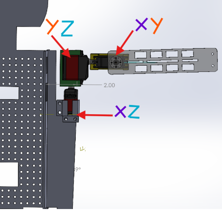
Fig. 1
Elbows
The elbows each hold one servo that moves the second half of the arm in the xy plane. The servo mount of the elbow also acts as a connector between the two segments of the arm, and adds stability to the arms by holding the connecting acrylic pieces together.
Fig. 2 below shows the CAD of the elbow mount, and Fig. 3 shows the mount on the robot itself close up.
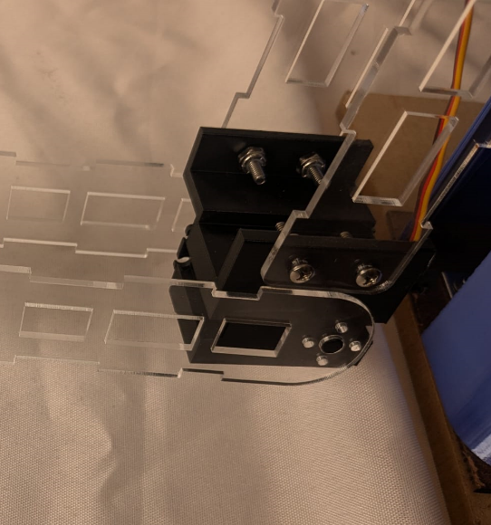
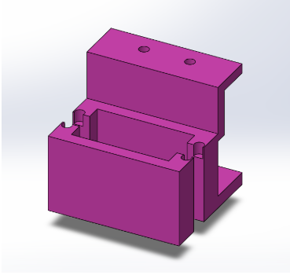
Fig. 3
Fig. 2
Connecting Pieces + Hands
The connecting portions of the arm are made from laser cut clear acrylic, and were designed with lightweighting the arm in mind. They are made with specific cut outs to decrease weight as much as possible so the servos didn’t struggle with lifting the weight, while also maintaining strength to add stability to the arms. Each segment of the arm has two acrylic pieces: one that attaches to the servo horn itself, and one that attaches to the back of the servo mount on the same axis as the servo horn. This design helps each segment of the arm support the segment in front of it and keeps the elbow joint stable. The 3-D printed hand on each arm is mostly for aesthetic purposes - it is not load bearing so it was printed with 0% infill because the focus was entirely on being lightweight. However, the hands do add support to the acrylic pieces and help ensure the second segment of the arm after the elbow joints stay in place.
Fig. 4 below shows the CAD of the connecting pieces in greater detail, and Fig. 5 shows the CAD of the hand.
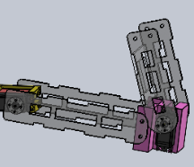

Fig. 5
Fig. 4
Body
The body housed all of the electrical components, and the shell covered it all up so L.A.D looked aesthetically pleasing.
Head + Torso Frame
We designed the torso frame to have a 4 x 10 x 10 inch tall space so that we could house all our electrical components on the front and back of the torso. We decided the middle of the torso should contain a grid of holes so that it would be easy to organize and secure all the electrical wires without knowing exactly how the wire harnessing would be done, especially since we designed the torso well before the final wiring was designed. We ended up iterating on the torso design very little, as we found the grid worked well. To assemble the torso, we made two parallel panels that would slot in perpendicularly from the main torso panel with the grid. For extra security, we used slot joints and L-brackets to secure the torso panels to the bottom of the baseplate that we laser cut out of hardboard.
Fig. 6 below shows the CAD of the torso, with all of the electrical components attached.
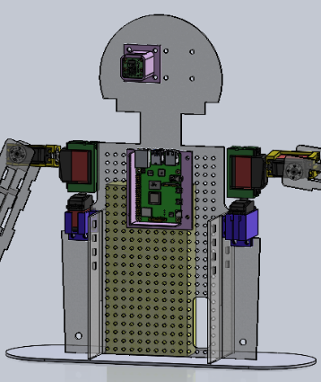
Fig. 6
Electronic Mountings
All of the wiring was housed inside the torso, and the power supply for the servo hat and battery pack for the Raspberry Pi rested in the torso as well, but the only mountings we designed were for the Raspberry Pi itself and the camera module.
The Raspberry Pi mount was designed to be mounted to the grid on the main torso panel, as the heart of L.A.D. We initially designed it with 4 walls, but found that the ports that protruded from the Pi were interfering with the walls, so we ended up redesigning it to only have 2 walls. This way, the Pi would be able to rest stably on the mount. Fig. 7 shows the 3D printed initial design (with one wall removed after printing to help accommodate the ports), and Fig. 8 shows the redesigned mount on the torso CAD.
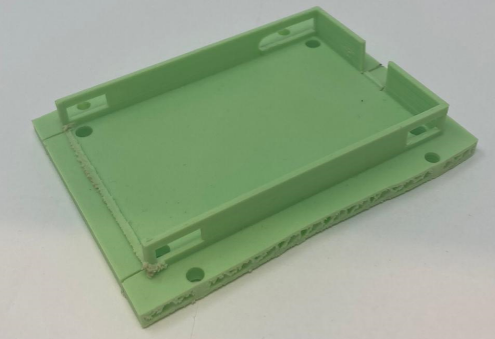
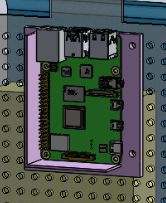
Fig. 7
Fig. 8
The camera module mount was designed to fit into the 4 mounting holes on the main head panel, as one of L.A.D's eyes. There is a slit in the mount to allow the camera cable to pass through it in the correct orientation to plug into the Pi. Fig. 9 shows the CAD of the mount on the head.
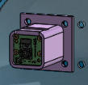
Fig. 9
Outer Shell
The outer shell is a thin 3D printed cover that covers all the inner workings of L.A.D and give the robot an aesthetically pleasing appearance. We designed the shell to be 0.1 inches thick in order to not waste PLA and decrease our print speed. We designed shells for the head, torso, and arms, but we ended up not printing the arm shells because we ran out of time and filament.
The head was designed to look simple but appealing, with two holes cut out for the "eyes" - one being the camera, and the other being an LED. We made the face flat for two reasons: the overall look of the head improved greatly over the initial design which was fully rounded, and we were able to print it with no supports. Fig. 10 shows the CAD of the head shell, and Fig. 11 shows the final printed head.
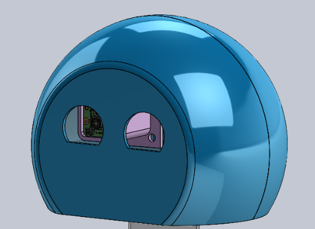
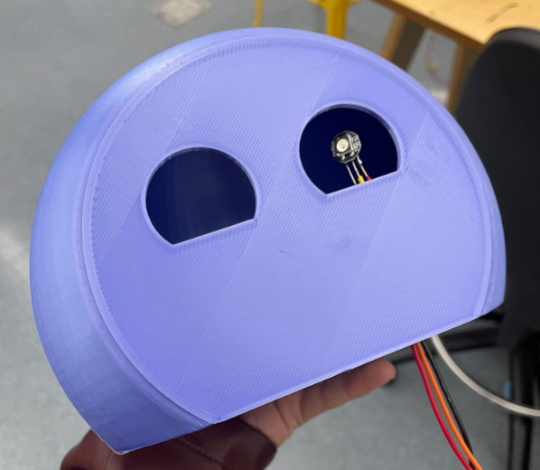
Fig. 10
Fig. 11
The torso shell helped provide a more cohesive look to L.A.D by covering up and protecting all of the electrical systems, and was also designed to fit into place in two pieces over the body. We ended up having to print it in 8 separate parts (4 for the front, 4 for the back) due to printer constraints, so we superglued all of the parts together. Fig. 12 shows the CAD of the torso shell, and Fig. 13 shows the final printed torso.
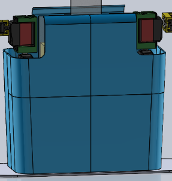
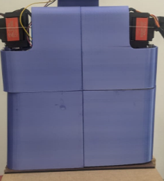
Fig. 12
Fig. 13
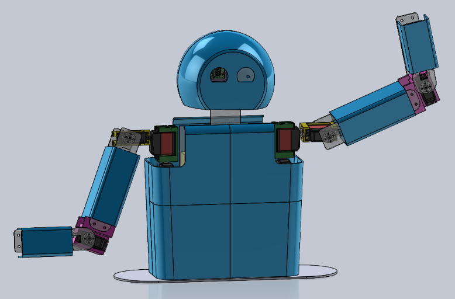
Fig. 14
The final CAD of L.A.D with all shell parts
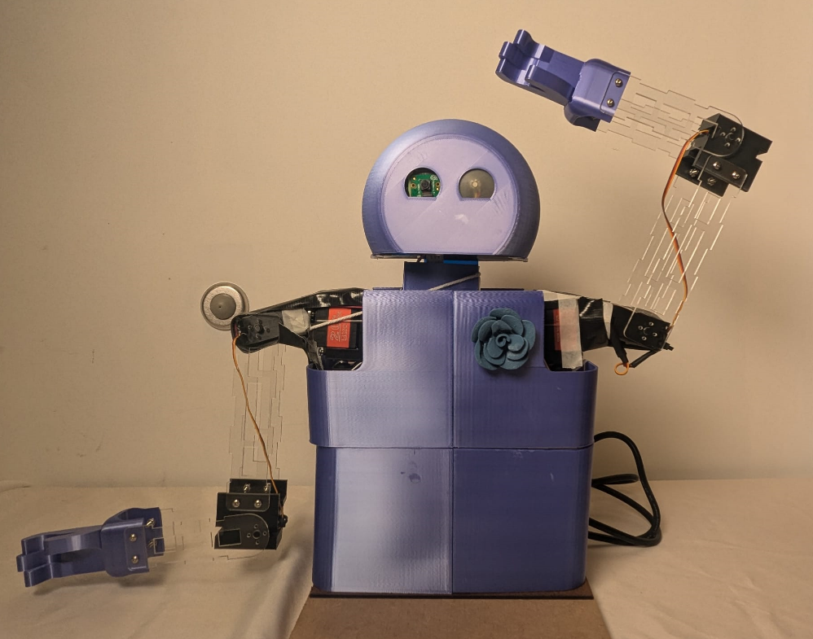
Fig. 15
The final L.A.D with all printed parts (plus a little flower lapel!)